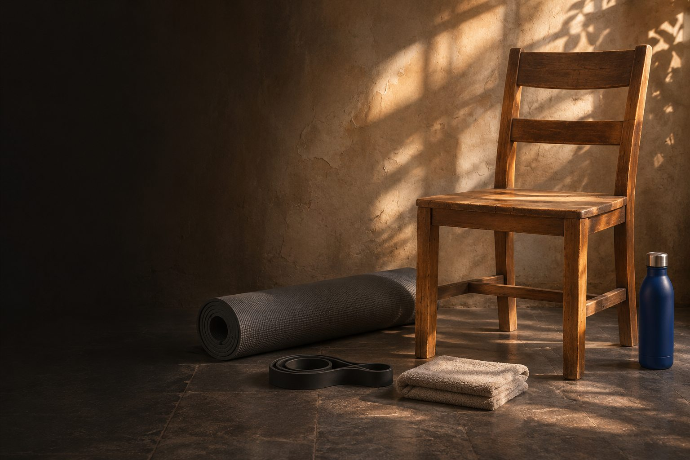
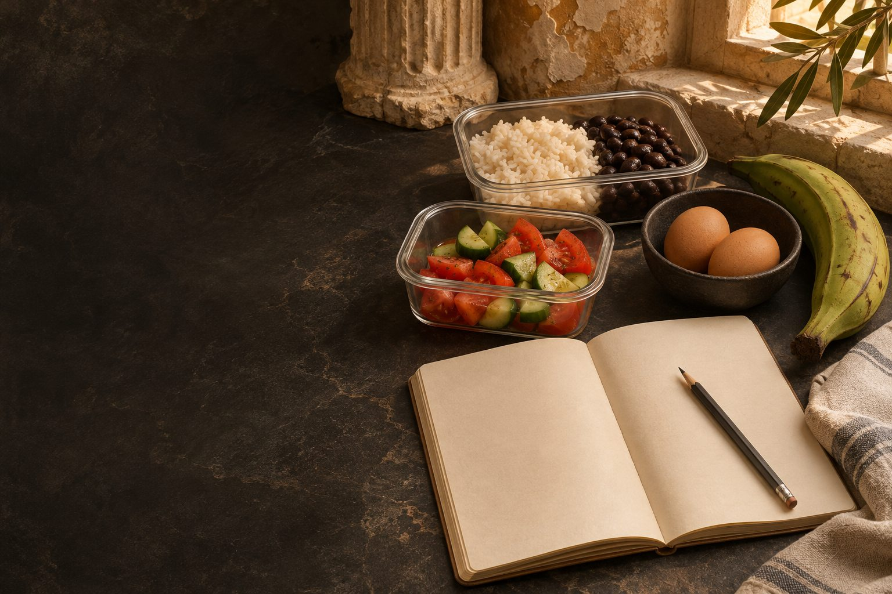
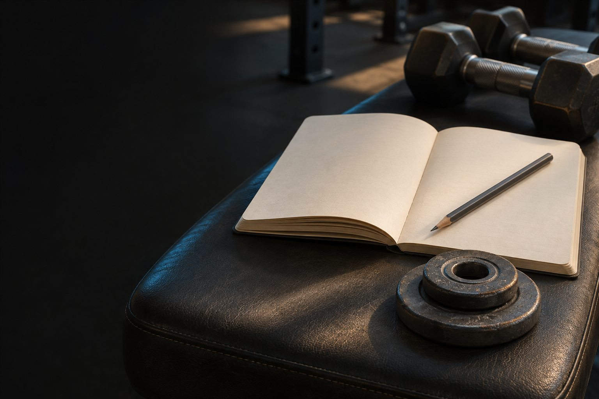
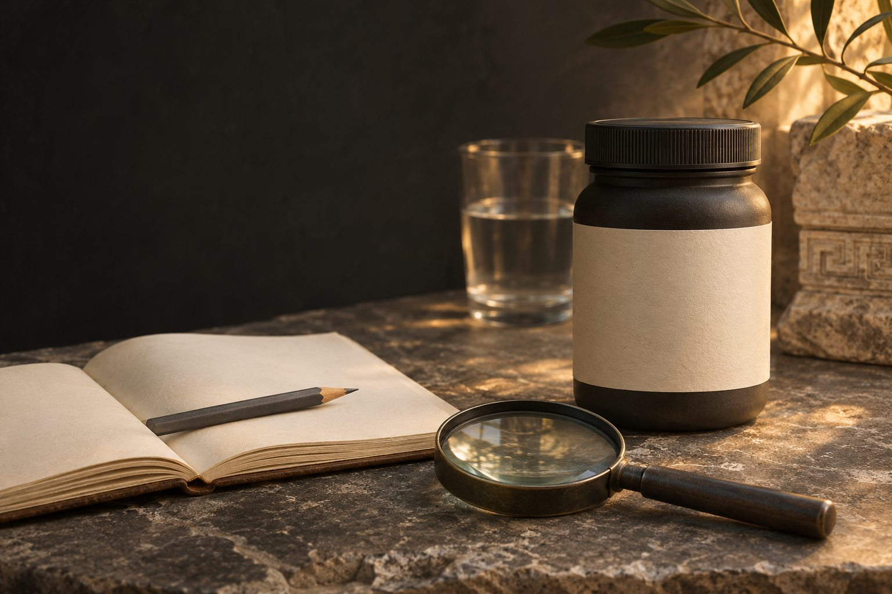

01 / ODYSSEY
Alimentación con criterio
Identificar la biblioteca y las guías de fundamentos con alimentos cotidianos; evitar asociar nutrición únicamente con suplementos.
Ubicación sugerida
nutricion-fundamentos.jpg
 BIBLIOTECA VISUAL / 14 NOV 2026
BIBLIOTECA VISUAL / 14 NOV 2026
Ocho recursos creados para las secciones que aún no tenían una imagen propia. Negro carbón, piedra, hierro y luz dorada para ODYSSEY; azul cobalto para conectar con GRIEGOS.
Estas son imágenes conceptuales generadas con IA. Están listas en assets y todavía no se muestran en las páginas de la web.
Identificar la biblioteca y las guías de fundamentos con alimentos cotidianos; evitar asociar nutrición únicamente con suplementos.
nutricion-fundamentos.jpg

Dar una portada reconocible a las herramientas y comunicar medición y registro sin mostrar resultados inventados.
calculadoras-metodo.jpg

Identificar los programas de gimnasio y separar visualmente entrenamiento de nutrición; se puede compartir entre ambos programas.
entrenamiento-gimnasio.jpg

Distinguir el programa doméstico del de gimnasio y representar su equipo mínimo.
entrenamiento-casa.jpg

Representar planificación, compras y preparación cotidiana en la guía de organización semanal.
nutricion-organizacion.jpg

Hacer reconocible el artículo de sobrecarga progresiva mediante registro e incrementos pequeños.
progresion-control.jpg

Comunicar revisión crítica de la información de un suplemento. Solo uso editorial: el envase no representa un producto a la venta.
suplementacion-criterio.jpg

Explicar visualmente los tres ejes de GRIEGOS y conectar Store azul con Academy dorada sin alterar el logotipo.
identidad-legado.jpg